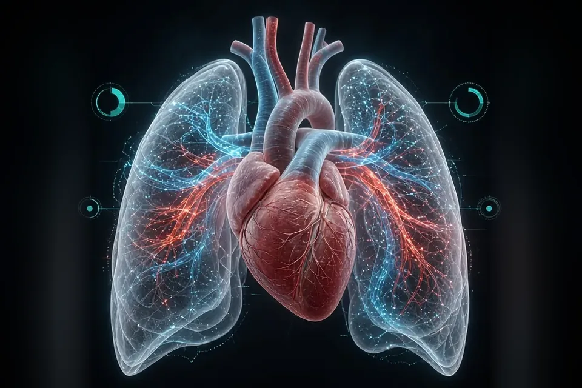
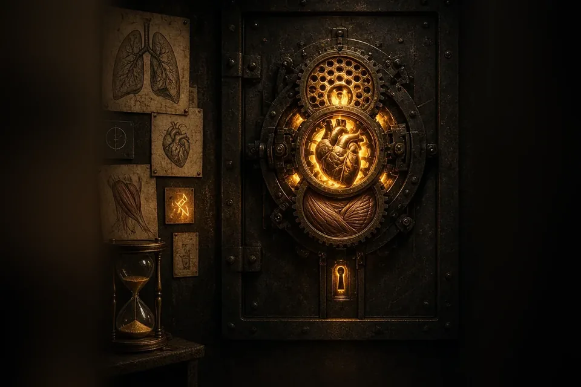
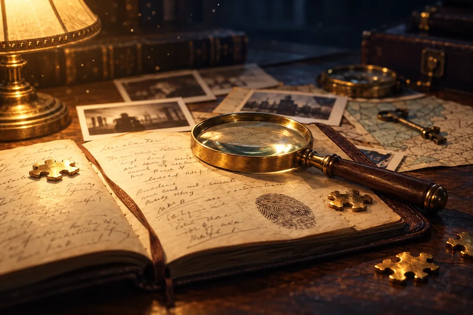
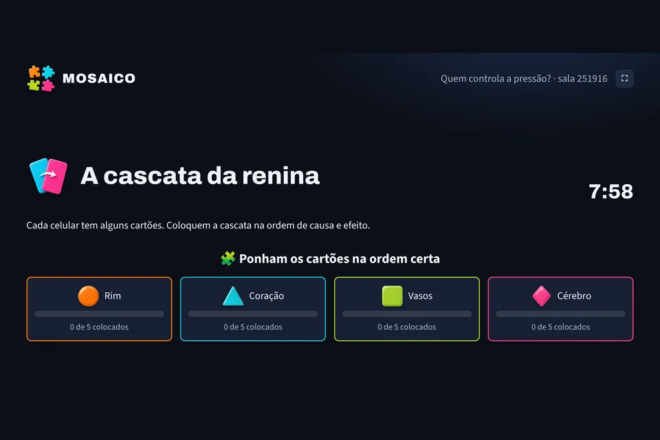
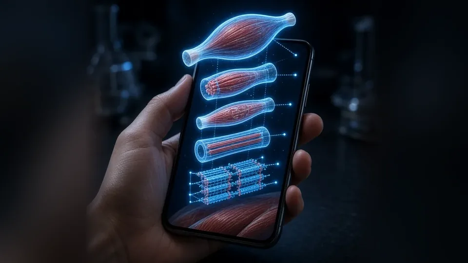
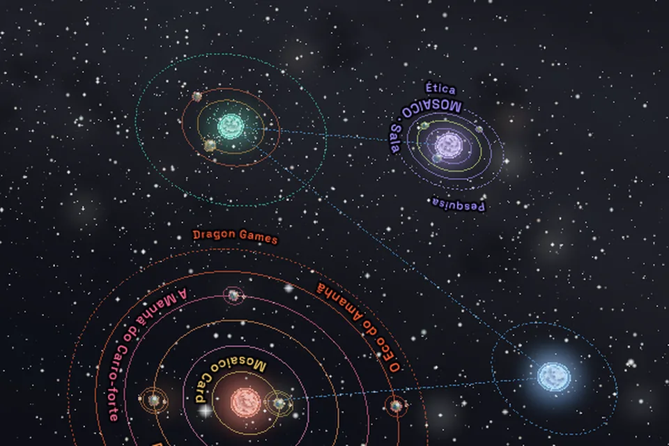
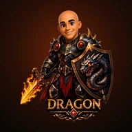

Prof. Mário César Nascimento, PhD · universo pessoal
Fisiologia para explorar.
Ética para decidir.
Jogos para descobrir.
Sou professor universitário, designer e desenvolvedor de tecnologias educacionais e jogos digitais. Integro ciência, aprendizagem e inteligência artificial para criar experiências de descobertas. Este é o meu universo pessoal.
Quem está chegando?
Ou atravesse para a Dragon Games-
01 · deste lado
Sala de aula
Fisiologia, Ética e Pesquisa, abertos para estudar e experimentar.
-
02 · no meio
Bancada
Onde testo realidade aumentada, 3D e ideias antes de irem para a aula ou para o jogo.
-
03 · do outro lado
Dragon Games
O mundo dos jogos de dedução, criado com a Osana.
Deste lado do portal
A sala de aula que dá para levar no bolso.
Simuladores, casos e desafios das minhas disciplinas. Abrem no celular, sem instalar nada.

57 experiênciasFisiologia InterativaSimuladores e tutores. Escolha o seu curso: Educação FísicaFisioterapia
14 salas de escapeFisiologia em FugaAbra os cadeados antes do tempo acabar. casos e dilemasÉtica InterativaCasos Éticos e o Dilema do Bonde para pensar decisões.
pesquisa fazendoLaboratório do PesquisadorAprender metodologia escolhendo o delineamento.
com a turma todaMOSAICO · SalaCada grupo tem um pedaço da resposta. A turma entra com o código que aparece no telão.Seu primeiro convite · Célula Viva
Uma célula do corpo humano, bem na sua frente.
Use a câmera do celular para colocar um modelo de célula no ambiente ao seu redor. Aproxime-se, observe de diferentes ângulos e descubra suas estruturas em realidade aumentada.
Uma descoberta para começar: encontre o núcleo e observe o que existe ao redor dele.
Explorar a célula em RA No computador, explore o modelo em 3D. A RA depende da compatibilidade do celular.Para professores
Para levar para a sua aula.
Tudo abre no navegador. Projete na TV e a turma acompanha no próprio celular.
- MOSAICO · SalaUm caso para a turma inteira: cada grupo tem um pedaço da resposta. Você prepara a aula e conduz pelo celular.Preparar uma aula →
- Simuladores de FisiologiaMostre o mecanismo na tela grande, mude as variáveis e discuta com a turma.Abrir os simuladores →
- Casos de ÉticaDilemas e casos para debater em grupo, com a turma decidindo junto.Ver os casos →
- Laboratório do PesquisadorEnsine metodologia fazendo o aluno escolher o delineamento.Abrir o laboratório →
Quer usar com a sua turma e precisa de ajuda? contato@drmarionascimento.com.br

No meio do caminho
A bancada
Realidade aumentada, modelos 3D e tudo o que ainda está sendo testado antes de virar aula ou jogo.
Agora estou mexendo em
- Comitê de Éticaem construçãoApurar um caso ético por fragmentos, com a turma no papel de conselho.
- O Eco do Amanhãem construçãoUm caso de ficção científica com uma torre em realidade aumentada.

Todos os projetos, em órbita O universo 3D O mapa completo: cada frente é um planeta e cada experiência, um satélite. Gire, aproxime e abra qualquer uma. Explorar o universoParcerias
Vamos fazer algo junto.
- Ensino e pesquisaEstudos, cursos e colaborações acadêmicas em Fisiologia, Ética e formação em pesquisa.Escrever →
- Tecnologia educacionalSimuladores e ferramentas de sala de aula para a sua instituição ou curso.Escrever →
- Dragon GamesJogos para escolas, eventos, empresas e estúdios.Ver as parcerias →

Do outro lado do portal
Dragon Games
Ninguém tem todos os fatos.
Jogos de dedução em grupo: os celulares de todos, uma TV se quiser, e uma verdade dividida em pedaços. Daqui para a frente, o tom muda.